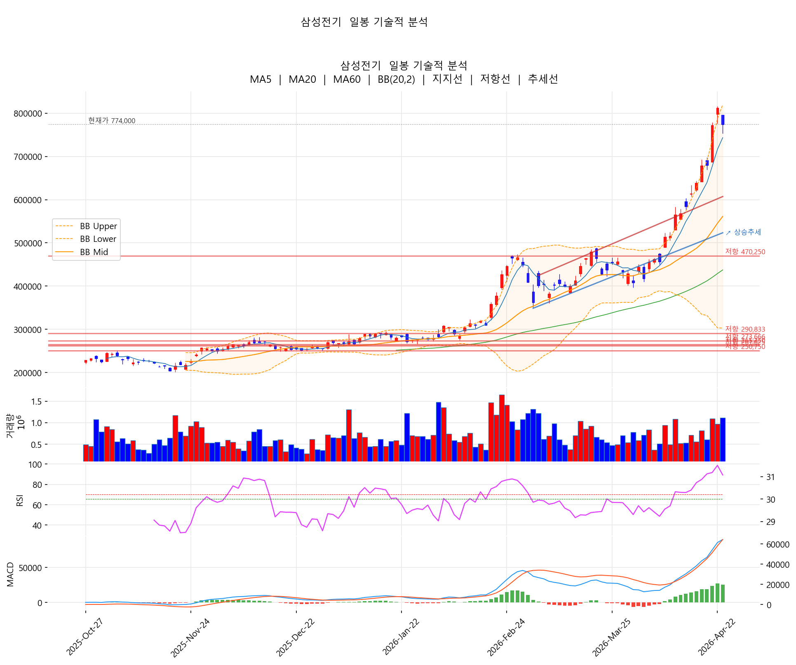
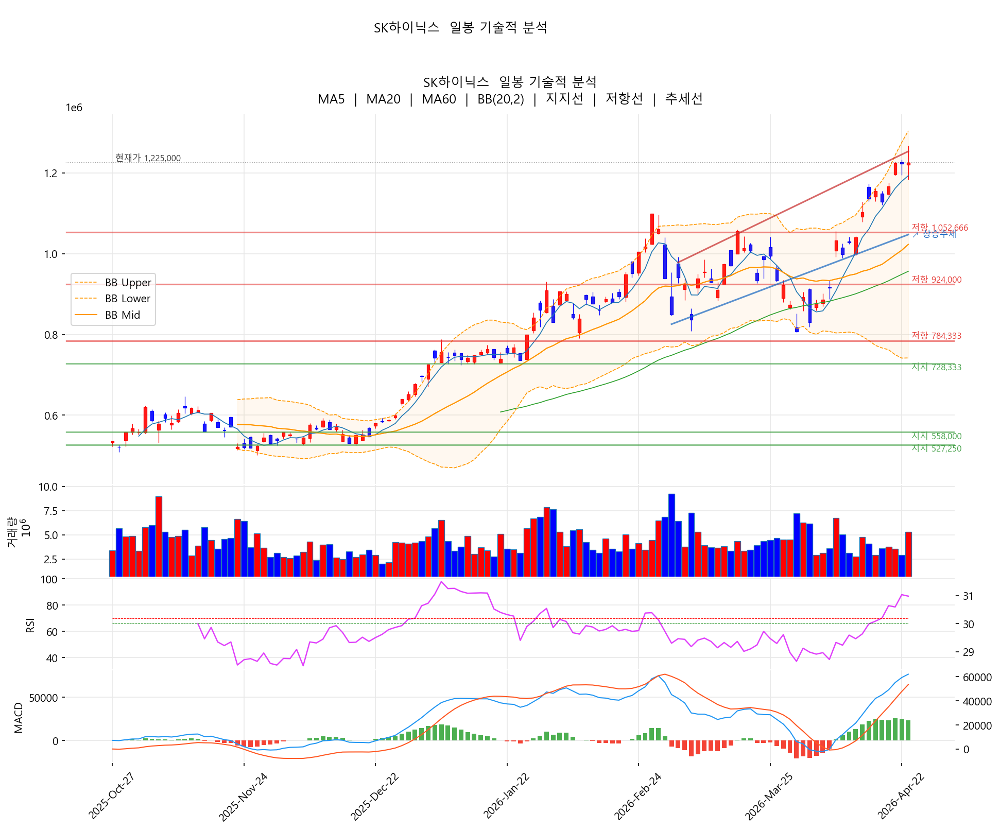
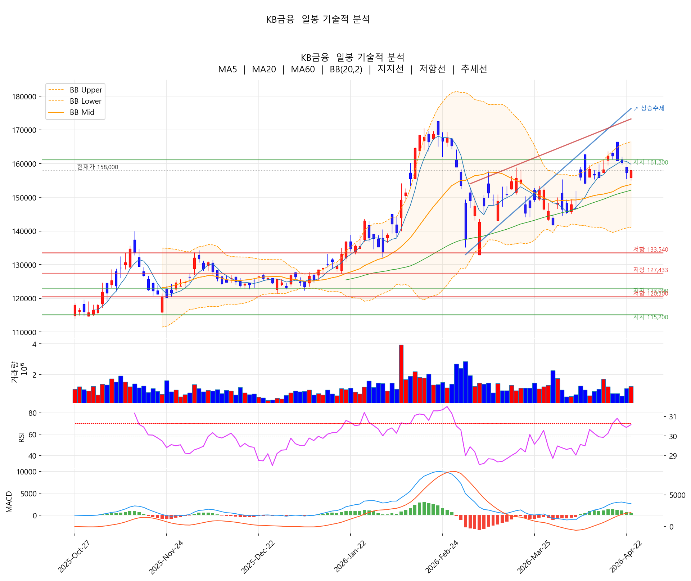
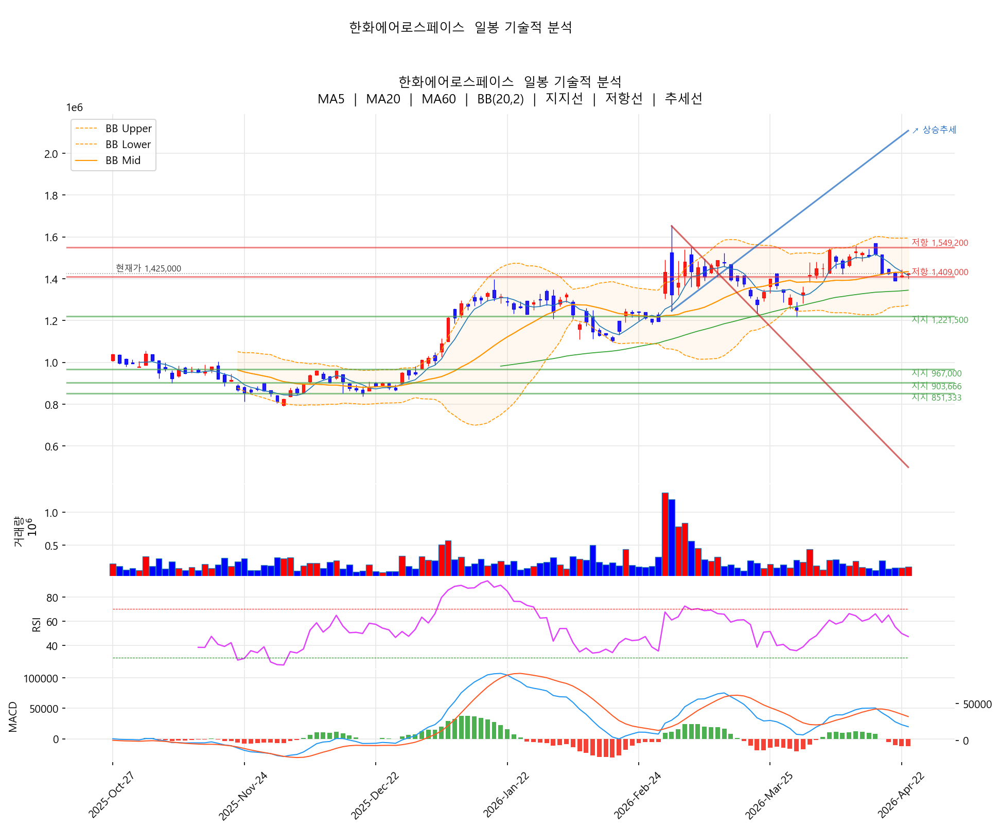
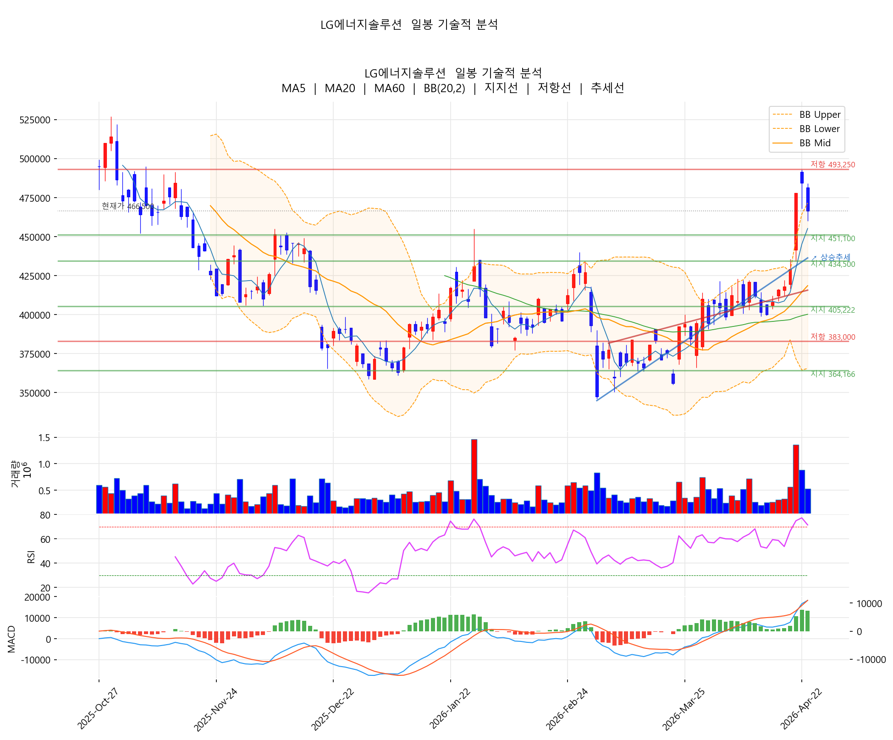

코스피가 6,475.8로 사상 최고치를 경신(사흘 연속 신고가)하며 장중 6,500선을 돌파했습니다. SK하이닉스 1분기 영업익 37.6조 사상 최대가 반도체 섹터를 끌어올렸고, 외국인·기관 쌍끌이 순매수가 지수를 받쳐줬습니다. 반면 최근 한 달 급등했던 삼성전기(-4.68%)와 2차전지 소재주는 차익 실현으로 큰 폭 하락. 벤츠 LFP 공급 공식화로 장중 +9%대까지 올랐던 LG엔솔은 -3.72%로 뒤집히며 마감했습니다.
① 지수: 코스피 6,475.8 (+?%) — 사상 최고치 사흘 연속
② 드라이버: SK하이닉스 영업익 37.6조 사상 최대
③ 환율: 원·달러 1,481원 — 미·이란 긴장 재고조로 상승
④ 수급: 외국인·기관 쌍끌이
⑤ 미국: 나스닥 사상 최고치, 휴전 연장 기대
주요 헤드라인 (4/23)
• 코스피, 중동 리스크 딛고 6475.8 마감…사상 최고치 또 경신 — 전자신문
• SK하이닉스도 날았다... 영업익 37.6조 사상 최대 — 조선일보
• 삼성SDI·LG에너지솔루션 주가 장중 나란히 9%대 올라, 벤츠와 배터리 협력 — 비즈니스포스트
• 삼성물산 '직원 밥값 빼먹었다' 오명 벗은 삼성…"2000억대 과징금 취소" — 한국경제
• 최근 한 달 주가 66% 급등한 삼성전기, 2년 연속 역대급 실적 전망 — 주간동아
• 외국인·기관 쌍끌이에 6388선 돌파 — 전자신문
오늘 시장의 본질: 지수는 사상 최고치를 경신했지만 그 내부는 극적으로 갈렸습니다. 실적 호재(SK하이닉스 37.6조)의 수혜주는 강세, 최근 한 달 급등했던 모멘텀주(삼성전기 +69%, 2차전지 +20%대)는 일제히 차익 실현. 흥미로운 건 벤츠 LFP 배터리 공급 공식화라는 명백한 호재에도 장중 +9%였던 LG엔솔이 -3.72%로 뒤집혔다는 점 — "재료 소멸 후 차익 실현" 전형적 패턴입니다.
| # | 종목 | 종가 | 등락률 | 5일 | 20일 |
|---|---|---|---|---|---|
| 1 | 삼성물산 | 320,000 | +6.31% | +4.58% | +15.11% |
| 2 | SK | 396,500 | +3.93% | +6.87% | +17.83% |
| 3 | 삼성전자우 | 156,200 | +3.24% | +4.83% | +23.67% |
| 4 | 삼성생명 | 255,500 | +3.23% | -0.97% | +15.09% |
| 5 | 삼성전자 | 224,500 | +3.22% | +3.22% | +24.65% |
| 6 | NAVER | 217,500 | +1.64% | -0.46% | +2.84% |
| 7 | 신한지주 | 99,900 | +1.32% | 0.00% | +6.96% |
| 8 | 셀트리온 | 206,000 | +0.98% | -1.44% | +1.48% |
| 9 | 한화에어로스페이스 | 1,425,000 | +0.64% | -6.19% | +4.09% |
| 10 | KB금융 | 158,000 | +0.38% | -2.65% | +3.81% |
| 종목 | 종가 | 등락률 | 5일 | 20일 |
|---|---|---|---|---|
| 에코프로비엠 | 205,500 | -5.73% | +0.24% | +3.32% |
| 삼성전기 | 774,000 | -4.68% | +21.13% | +69.37% |
| 포스코퓨처엠 | 246,000 | -4.47% | +10.07% | +23.00% |
| 에코프로 | 157,200 | -4.32% | +5.36% | +7.67% |
| LG에너지솔루션 | 466,500 | -3.72% | +12.14% | +21.33% |
| 삼성바이오로직스 | 1,514,000 | -3.01% | -6.31% | -4.48% |
| LG전자 | 129,900 | -2.18% | +3.10% | +14.96% |
| POSCO홀딩스 | 410,500 | -1.91% | +10.95% | +19.85% |
| 현대차 | 532,000 | -1.66% | -0.37% | +8.57% |
| SK텔레콤 | 98,800 | -1.50% | +3.02% | +23.50% |
건설·상사 (+6.31%) · 삼성물산 과징금 취소
지주사 (+3.93%) · SK하이닉스 영업익 사상 최대
반도체 (+2.13% 혼조) · 대형 반도체만 상승
금융 (+1.64%) · 삼성생명 +3.23%
방산 (+0.64%) · 한화에어로 +0.64%. 미·이란 긴장 재고조에도 제한적 반등. 5일 -6.19%로 지난주 낙폭 회복에는 시간 필요.
자동차 (-1.33%) · 현대차 -1.66%, 기아 -1.00%. 오늘 지수 사상 최고치와 동떨어진 흐름.
AI부품·MLCC (-4.68%) · 삼성전기 과열 해소
2차전지 (-4.57%) · 벤츠 재료 소멸 후 차익 실현
바이오 (-0.86%) · 삼성바이오로직스 -3.01%로 약세 주도. 20일 -4.48%로 시장 랠리에서 계속 소외되는 섹터.
지수는 사상 최고치를 경신했지만 그 내부는 '실적 수혜 vs 모멘텀 차익 실현'의 극적인 분화입니다. SK하이닉스 37.6조 실적이 반도체 대형주를 끌어올린 사이, 최근 한 달 +66%~+69% 급등했던 삼성전기와 +20%대 오른 2차전지 소재주는 일제히 -4~-5% 하락. 벤츠 호재에 장중 +9%였던 LG엔솔이 -3.72%로 뒤집힌 것이 오늘 시장 심리를 가장 잘 보여주는 사건입니다.

차트 해석: RSI 89.4로 극심한 과매수 구간. 오늘 -4.68% 조정으로 볼린저 상단 91.1% 위치까지 내려왔지만 여전히 상단부. 20일 +69.37%의 누적 상승폭을 고려하면 추가 조정 가능성이 큽니다. 다만 "FC-BGA 글로벌 1위 도약"·"MLCC 업사이클" 같은 펀더멘털 호재는 여전히 유효해 중기 추세는 상방.
📍 지지: 720K(심리) → 680K(전전일 저점). 저항: 820K(직전 고점).

차트 해석: 사상 최대 영업익 37.6조 발표 당일 +0.16% 마감 — 전형적인 "재료 소멸" 패턴. RSI 86.7로 극과매수 구간 진입. 거래량 1.23x로 매물 소화 중. 20일 +31.30% 급등 뒤에 나온 재료이므로 단기 조정 가능성 높음.
📍 지지: 1,193K(MA5) → 1,100K(심리). 저항: 1,267K(60일 고점).

차트 해석: +0.38% 소폭 상승. RSI 68.9로 경계선 부근이지만 과열은 아님. 볼린저 중앙부(66.6%)에 위치해 추가 상승 여지. 정배열(MA5 > MA20 > MA60) 유지. 시장 랠리에서 자극적인 상승은 없지만 안정적 흐름.
📍 지지: 154K(MA20) → 152K(MA60). 저항: 165K(BB 상단) → 172K(60일 고점).

차트 해석: 5종목 중 유일하게 MACD 데드크로스 발생 + MA5/20/60 혼조. 지난주 종전 기대에 -6.32% 급락한 영향으로 기술적으로 약세 전환. 다만 RSI 47대 중립 구간이라 과매도는 아님. 미·이란 긴장 재고조가 추가 반등 트리거가 될 수 있으나 본격 추세 복귀에는 시간 필요.
📍 지지: 1,400K(심리) → 1,350K. 저항: 1,500K → 1,560K.

차트 해석: 벤츠 LFP 공식화로 장중 +9%대까지 올랐으나 -3.72%로 뒤집힌 전형적인 "장대 위꼬리 음봉". RSI 71.4로 과매수, 볼린저 상단 95.2%로 한계 구간. 20일 +21.33% 급등 후의 차익 실현 성격이 큼.
📍 지지: 455K(MA5) → 430K. 저항: 471K(BB 상단) → 493K(60일 고점).
| 분할 진입 | 218,000~222,000원 |
| 1차 목표 | 235,000원 |
| 손절 | 210,000원 |
| 분할 진입 | 1,150,000~1,180,000원 (조정 시) |
| 1차 목표 | 1,267,000원 (60일 고점) |
| 손절 | 1,100,000원 |
| 분할 진입 | 700,000~730,000원 (조정 대기) |
| 1차 목표 | 820,000원 |
| 손절 | 670,000원 |
| 분할 진입 | 305,000~315,000원 |
| 1차 목표 | 340,000원 |
| 손절 | 290,000원 |
| 재진입 검토 | 430,000원 지지 확인 후 |
| 1차 목표 | 493,000원 (60일 고점) |
| 손절 | 410,000원 |
오늘의 드라이버: SK하이닉스 영업익 37.6조 + 외국인·기관 쌍끌이 → 코스피 사상 최고치 6,475
강세 섹터: 건설·상사(삼성물산 과징금 취소) > 지주사(SK) > 반도체(삼성전자) > 금융
약세 섹터: AI부품(삼성전기 과열 해소) > 2차전지(벤츠 호재 후 차익실현) > 바이오
핵심 교훈: "재료 소멸 + 단기 과열" = 호재에도 하락. LG엔솔이 장중 +9% → 종가 -3.72%로 뒤집힌 것이 가장 극명한 사례.